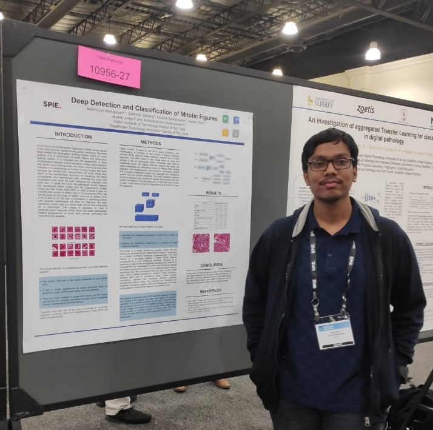

|
I graduated from IIITDM Kancheepuram with a Dual Degree Previously, I was a Research Intern at Healthcare Technology Innovation Centre(HTIC), IIT Madras, where I was part of the Image Computing group, pursuing research in Deep Learning for Medical Imaging. I am an international chess player, with a FIDE rating of 2126. I am also an avid quizzer and football fanatic. Email / CV / Google Scholar / Github / LinkedIn |
 |
|
I have been conducting research on DL-based methods to alleviate persistent issues in Medical Image Segmentation and Reconstruction, although I am interested to work on Computer Vision problems in general. My current research is focused on the 2 key tenets of transforming academic research into real-life applications, namely Knowledge Distillation for memory efficiency and Disentanglement for Model Interpretability, specifically in GANs. |


{kind=link}
|
|
| Reviewer, Machine Learning for Health (ML4H) Symposium, 2021 | |
| Reviewer, Machine Learning for Health (ML4H) Workshop, NeurIPS 2020 | |
| Reviewer, ACM Conference on Health, Inference, and Learning (CHIL) 2020 | |
| Reviewer, Machine Learning for Health (ML4H) Workshop, NeurIPS 2019 | |
| Teaching Assistant, Operating Systems(COM301), IIITDM Kancheepuram |